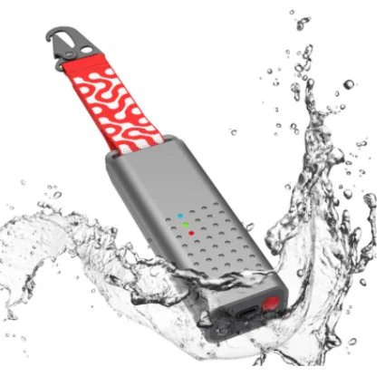

<![CDATA[<div class="container">
    <div class="row">
        <div class="col-md-6">
            <div class="product-image text-center mb-4">
                
            </div>
        </div>
        <div class="col-md-6">
            <div class="product-description">
                <h3>3.1 Worker Tracking Devices</h3>
                <h4>GPS-enabled LoRa Trackers</h4>
                <ul>
                    <li>Compact, wearable devices with integrated GPS and LoRa modules</li>
                    <li>Periodic transmission of location data via LoRa protocol</li>
                    <li>Configurable transmission intervals (every 5-15 minutes)</li>
                    <li>Maximum packet size of 243 bytes for efficient data transfer</li>
                </ul>
            </div>
        </div>
    </div>
</div>]]>
